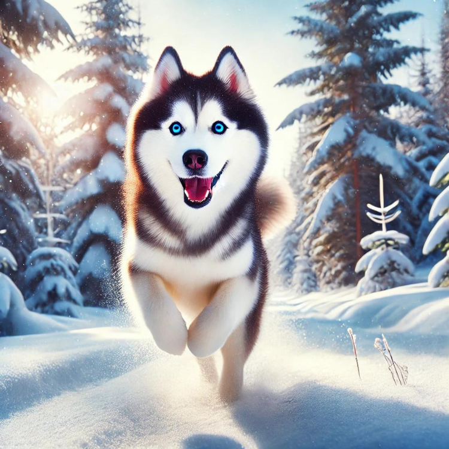

Siberian Huskies are a captivating and charming breed of dog, originally bred in the Siberian region. They were initially used for sledding, which has endowed them with a robust physique and exceptional endurance. Today, Huskies are not only exceptional working dogs but also beloved companions in many households. This article will delve into the unique characteristics of this breed.
The history of Huskies dates back thousands of years to the Siberian region, where they were developed by the Chukchi people. These dogs were essential for sledding, hunting, and guarding their homes. Huskies have a medium-sized build with a thick double coat that helps them stay warm in harsh climates. In the early 20th century, Huskies were introduced to the United States and quickly gained fame for their prowess in Alaskan sled dog races.
Huskies are known for their striking appearance. They have erect triangular ears, almond-shaped eyes that can be blue, brown, or even have heterochromia (different eye colors). Their coat colors vary, including black and white, gray and white, red and white, and pure white. Huskies are medium-sized dogs, with males standing around 21-23.5 inches tall and weighing between 45-60 pounds, slightly smaller in females.
Huskies are renowned for their friendly, outgoing, and lively personalities. They are highly social and enjoy interacting with people and other dogs. While Huskies are intelligent, they can also be stubborn at times, requiring patient and consistent training. They are deeply loyal to their families but are generally not guard dogs due to their friendly nature towards strangers.
Caring for a Husky involves several considerations:
Huskies are often likened to wolves due to their sharp facial features and erect ears. However, their behavior and temperament are quite different. Unlike wolves, Huskies are highly social and friendly rather than solitary hunters.
Compared to other sled dogs like Alaskan Malamutes, Huskies are smaller in size, faster, and more agile, while Malamutes are known for their strength.
A fascinating trait of Huskies is their distinctive vocalizations—they are known for their howling rather than barking, which sets them apart from most other dog breeds.
Huskies are a beautiful and energetic breed of dog, ideally suited for experienced dog owners. If you can meet their exercise and grooming needs, and invest time and patience in training, Huskies will reward you with loyalty and affection. Their friendly and outgoing nature brings endless joy and vitality to any household.
If you have doubts about choosing between a collar or harness for your furry friend, you can refer to the following article:
If you have questions about brushing your dog’s teeth or using dental chews, you can refer to the article: